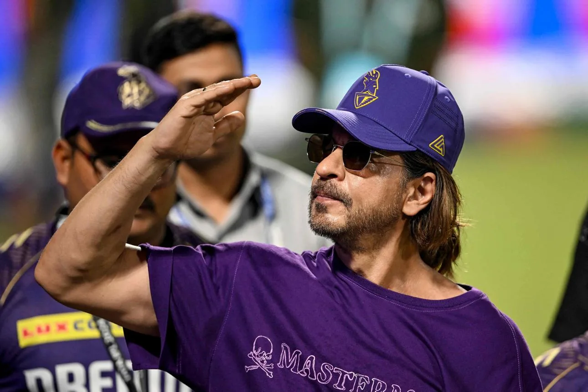

The Final Thesis · section 63 of 92
PART V — THE ROYAL TREASURY
9. Beyond the film: brands, business and the expanding public profile

7
The post-resurrection story extends beyond the theatrical business.
Shah Rukh Khan's public profile includes endorsements, production, cricket franchise ownership, real-estate-related commercial activity, international appearances and investments.
These activities matter because they represent different forms of value around a celebrity.
A film generates theatrical and ancillary revenue. An endorsement connects a celebrity to a brand's distribution and marketing. A sports franchise creates a relationship with a team, a competition, sponsors and fans. A technology investment creates exposure to a different kind of business.
But these activities must not be collapsed into a single, assumed master strategy.
The commercial map
| Area | Documented subject | What the case study investigates |
|---|---|---|
| Endorsements | Consumer brands, financial services, technology and lifestyle campaigns | How the celebrity's public image is adapted to different categories and audiences. |
| Production | Red Chillies Entertainment | The relationship between production capabilities, film marketing and intellectual property. |
| Cricket | Kolkata Knight Riders and Knight Riders-branded cricket interests | How sport creates a recurring fan relationship beyond individual film releases. |
| International activity | Public appearances and commercial events | How international visibility intersects with the global audience for Indian entertainment. |
| Wealth estimates | Hurun's published rich-list assessments | How third-party wealth estimates are calculated and why they are not the same as verified liquid wealth. |
| Technology | FLAM investment connection | The relationship between celebrity capital, AI-enabled media and interactive content. |
A celebrity's involvement in several industries does not prove that those industries are being coordinated as a single marketing operation.
The research must establish ownership, investment, contractual relationships, dates and the specific role of the celebrity in each venture.
The Hurun question
Wealth-list figures can be useful indicators of how financial publications estimate the scale of a celebrity's commercial interests.
They are not audited personal balance sheets.
A published wealth estimate may combine business valuations, ownership interests, real estate, investments and other assets, with assumptions about liabilities and liquidity.
The paper should cite the specific edition of the Hurun list and the valuation date used. It should not present an estimate as an independently verified cash balance.
The same standard applies to property-related activity: distinguish confirmed transactions, ownership interests, brand endorsements and reported market values.
Cricket as a recurring audience relationship
Cricket is particularly relevant to the fan-economy thesis because it creates a recurring calendar of matches, team narratives, merchandise, sponsors and community activity.
A film campaign is often organised around a finite release window. A sports franchise operates through repeated seasons and recurring events.
That difference provides a useful comparison for the proposed SRKWORLD model.
Could some of the continuity associated with sports fandom be translated into entertainment franchises, without treating fans as a captive audience or assuming that their participation automatically becomes commercially exploitable?
The answer depends on community design, rights, trust, creative freedom and the ability to offer value between film releases.
This is a proposal to investigate—not a claim that such a system already exists around Shah Rukh Khan's film properties.